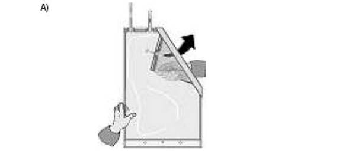
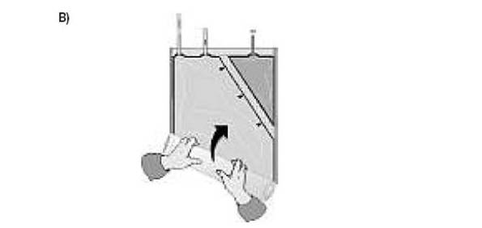

RÉSUMÉ DES CARACTÉRISTIQUES DU PRODUIT
ANSM - Mis à jour le : 30/05/2012
MULTIBIC 4 mmol/l POTASSIUM, solution pour hémofiltration
2. COMPOSITION QUALITATIVE ET QUANTITATIVE
MULTIBIC 4 mmol/l POTASSIUM est présenté en poche bi-compartimentée: un compartiment de 4,75 l contient la solution alcaline de bicarbonate, l'autre compartiment de 0,25 l contient la solution acide à base de glucose et d'électrolytes.
AVANT RECONSTITUTION:
Solution A: solution acide à base de glucose et d'électrolytes (petit compartiment)
Chlorure de potassium ...................................................................................................................... 5,964 g
Chlorure de calcium dihydraté ........................................................................................................... 4,410 g
Chlorure de magnésium hexahydraté ................................................................................................. 2,033 g
Glucose anhydre .............................................................................................................................. 20,00 g
Sous forme de glucose monohydraté ................................................................................................. 22,00 g
Pour 1000 ml.
|
K+ |
: |
80 mmol |
|
|
Ca++ |
: |
30 mmol |
|
|
Mg++ |
: |
10 mmol |
|
|
Cl- |
: |
162 mmol |
|
|
Glucose |
: |
111 mmol |
Solution B: solution alcaline de bicarbonate (grand compartiment)
Chlorure de sodium .......................................................................................................................... 6,453 g
Bicarbonate de sodium ..................................................................................................................... 3,104 g
Pour 1000 ml.
|
Na+ |
: |
147,37 mmol |
|
|
Cl- |
: |
110,42 mmol |
|
|
HCO3- |
: |
36,95 mmol |
APRES RECONSTITUTION:
1000 ml de la solution prête à l'emploi contiennent:
Chlorure de potassium .................................................................................................................... 0,2982 g
Chlorure de sodium .......................................................................................................................... 6,136 g
Bicarbonate de sodium ..................................................................................................................... 2,940 g
Chlorure de calcium dihydraté .......................................................................................................... 0,2205 g
Chlorure de magnésium hexahydraté ................................................................................................ 0,1017 g
Glucose anhydre ............................................................................................................................ 1,0000 g
Sous forme de glucose monohydraté ................................................................................................ 1,1000 g
|
Na+ |
: |
140,00 mmol |
|
|
K+ |
: |
4,0 mmol |
|
|
Ca++ |
: |
1,50 mmol |
|
|
Mg++ |
: |
0,50 mmol |
|
|
Cl- |
: |
113,00 mmol |
|
|
HCO3- |
: |
35,00 mmol |
|
|
Glucose |
: |
5,55 mmol |
Pour la liste complète des excipients, voir rubrique 6.1.
Osmolarité théorique: 300 mOsm/l
pH ≃ 7,20
Solution pour hémofiltration.
Solution limpide et incolore.
4.1. Indications thérapeutiques
Insuffisance rénale aiguë nécessitant une hémofiltration en continu.
4.2. Posologie et mode d'administration
Le traitement par hémofiltration des patients atteints d'insuffisance rénale aiguë, nécessitant la prescription de solutions de substitution, doit être réalisé sous la responsabilité d'un médecin connaissant la technique.
Le traitement est prescrit pour une période limitée en cas d'insuffisance rénale aiguë et est arrêté lorsque la fonction rénale est complètement rétablie.
MULTIBIC 4 mmol/l POTASSIUM est exclusivement réservée à la voie intraveineuse.
Perfuser la solution prête à l'emploi dans la circulation extra-corporelle au moyen d'une pompe.
En hémofiltration, le volume sanguin substitué, moins la perte de poids désirée, doit être compensé par une solution pour hémofiltration.
La dose de solution de substitution est prescrite par le médecin, en fonction de l'état clinique et du poids du patient.
Sauf indication contraire, une dose variant entre 800 et 1400 ml/h est indiquée chez l'adulte pour éliminer les déchets métaboliques, en fonction de l'état du patient. Une dose de solution de substitution maximum de 75 l par jour est recommandée.
Il n'y a pas d'études cliniques concernant l'utilisation et la posologie de ce produit chez l'enfant.
Pour les instructions d'utilisation, voir rubrique 6.6.
Les contre-indications liées à la solution sont les suivantes:
· Hyperkaliémie;
· Alcalose métabolique.
Les contre-indications liées à la technique de l'hémofiltration sont les suivantes:
· insuffisance rénale avec hypercatabolisme aggravé dans les cas où les symptômes urémiques ne sont plus soulagés par l'hémofiltration;
· débit sanguin non approprié à partir de l'accès vasculaire;
· risque élevé d'hémorragie causée par une anticoagulation systémique.
4.4. Mises en garde spéciales et précautions d'emploi
Avant utilisation, la solution pour hémofiltration doit être réchauffée approximativement à la température du corps à l'aide d'un réchauffeur approprié. En aucun cas, la solution ne doit être administrée à température inférieure à la température ambiante.
Le réchauffement de la solution à la température du corps doit être contrôlée attentivement en vérifiant que la solution est claire et sans particules.
La formation d'un précipité blanc de carbonate de calcium a été observée dans les tubulures dans de rares cas lors de l'utilisation de MULTIBIC en épuration extrarénale continue, plus particulièrement aux abords de la pompe et du réchauffeur.
L'apparition de tels précipités peut survenir particulièrement si la température de la solution de MULTIBIC en amont de la pompe est déjà plus élevée que 25°C.
En conséquence, la solution MULTIBIC dans les tubulures devrait faire l'objet d'une surveillance visuelle étroite à intervalles de 30 minutes durant l'hémofiltration afin de s'assurer que cette solution dans les tubulures est limpide et exempte de précipité. Les précipités peuvent apparaître, en général, plusieurs heures après le début du traitement. Si un précipité est détecté, la solution MULTIBIC et les lignes doivent être immédiatement remplacées et le patient doit être soigneusement surveillé.
La concentration sérique en potassium doit être contrôlée régulièrement avant et pendant l'hémofiltration. Le taux de potassium du patient ainsi que son évolution doivent être surveillés en cours de traitement.
En cas d'hyperkaliémie ou de tendance à l'hyperkaliémie, il est indiqué d'augmenter le débit de filtration et/ou d'utiliser une solution de substitution ayant une plus faible concentration en potassium. Aussi, le recours aux mesures de thérapie intensive peut s'avérer nécessaires.
De plus, les paramètres suivants doivent être contrôlés avant et pendant l'hémofiltration: natrémie, calcémie, magnesémie, phosphatémie, glycémie, équilibre acido-basique, taux d'urée et de créatinine, poids corporel et bilan liquidien (pour le diagnostic précoce d'une hyperhydratation et d'une déshydratation).
Avant utilisation, la poche de solution pour hémofiltration doit être minutieusement inspectée (voir rubrique 6.6).
Ne pas perfuser avant d'avoir mélangé les deux solutions.
4.5. Interactions avec d'autres médicaments et autres formes d'interactions
Un dosage correct des solutions de substitution ainsi qu'une surveillance stricte des paramètres cliniques et des signes vitaux éviteront les interactions avec d'autres médicaments.
Les interactions suivantes sont possibles:
· Les solutions de substitution électrolytiques, la nutrition parentérale et autres solutions de perfusion habituellement prescrites en soins intensifs, interagissent avec la composition sérique et le bilan hydrique du patient. Ceci doit être considéré en cas d'administration de solution pour hémofiltration.
· Un traitement par hémofiltration peut réduire la concentration sérique de certains médicaments, tels que les médicaments avec une faible capacité de liaison aux protéines, avec un faible volume de distribution, avec un poids moléculaire inférieur au point de coupure de l'hémofiltre et les médicaments qui sont adsorbés sur l'hémofiltre. Une vérification du dosage de tels médicaments peut être nécessaire.
· Les effets toxiques des digitaliques peuvent être masqués par une hyperkaliémie, une hypermagnésémie et une hypocalcémie. La correction de ces électrolytes par hémofiltration peut précipiter l'apparition de signes et symptômes de la toxicité des digitaliques, par exemple: arythmie cardiaque.
A ce jour, aucune étude clinique n'est disponible. La solution de substitution au tampon bicarbonate doit être utilisée seulement après évaluation des risques potentiels et des bénéfices, chez la mère et l'enfant.
4.7. Effets sur l'aptitude à conduire des véhicules et à utiliser des machines
Sans objet.
Les effets indésirables tels que les nausées, vomissements, crampes musculaires, hypotension et hypertension, peuvent provenir du mode de traitement lui-même ou peuvent être induits par la solution de substitution.
En général, la solution pour hémofiltration au tampon bicarbonate est bien tolérée. Cependant, les effets secondaires potentiels suivants, liés au traitement, peuvent être rencontrés:
· hyperhydratation ou hypohydratation,
· désordres électrolytiques (ex.: hypokaliémie),
· hypophosphatémie,
· hyperglycémie,
· alcalose métabolique.
Lorsque la solution est utilisée selon la prescription, aucun cas grave de surdosage n'a été rapporté. D'ailleurs, l'administration de la solution peut être arrêtée à n'importe quel moment.
Si l'équilibre des fluides n'est pas calculé et surveillé correctement, une hyperhydration ou une déshydratation sévères peuvent apparaître, accompagnées de troubles circulatoires. Ces troubles peuvent se traduire par une modification de la pression sanguine, de la pression veineuse centrale, du débit cardiaque et de la pression artérielle pulmonaire. En cas d'hyperhydration, des accidents congestifs cardiaques et/ou une congestion pulmonaire peuvent se produire.
En cas d'hyperhydratation, l'ultrafiltration doit être augmentée et le volume ainsi que le débit de la solution de substitution infusée doivent être diminués. En cas de déshydratation sévère, l'ultrafiltration doit être diminuée ou interrompue et le volume de solution de substitution infusé doit être augmenté de manière appropriée.
Un surdosage peut entraîner des désordres électrolytiques et des modifications de l'équilibre acido-basique. Par exemple, un excès de bicarbonate peut apparaître si un volume trop important de solution de substitution est administré. Ceci peut entraîner éventuellement une alcalose métabolique, une diminution du calcium ionisé ou une tétanie.
5. PROPRIETES PHARMACOLOGIQUES
5.1. Propriétés pharmacodynamiques
Classe pharmacothérapeutique: Solution pour Hémofiltration
Code ATC: B05ZB
Principes de base de l'hémofiltration:
Pendant l'hémofiltration en continu, l'eau et les solutés, tels que les toxines urémiques, les électrolytes et le bicarbonate sont épurés par ultrafiltration. L'utrafiltrat est remplacé par une solution de substitution ayant une composition équilibrée en électrolytes et en tampon (solution pour hémofiltration).
La solution pour hémofiltration prête à l'emploi est une solution de substitution au tampon bicarbonate, administrée par voie intraveineuse, pour le traitement de l'insuffisance rénale aiguë quelle qu'en soit l'origine et nécessitant une hémofiltration en continu.
Les électrolytes Na+, K+, Mg++, Ca++, Cl- et le bicarbonate sont indispensables pour le maintien et la correction du bilan liquidien et des électrolytes (volume sanguin, équilibre osmotique, équilibre acido-basique).
5.2. Propriétés pharmacocinétiques
La solution pour hémofiltration prête à l'emploi doit seulement être administrée par voie intraveineuse.
La distribution des électrolytes et du bicarbonate est régulée selon les besoins, l'état métabolique et la fonction rénale résiduelle. Les substances actives de la solution de substitution ne sont pas métabolisées, excepté le glucose. L'élimination de l'eau et des électrolytes dépend des besoins cellulaires, de l'état métabolique, de la fonction rénale résiduelle et des autres voies d'élimination des fluides (par exemple, voie intestinale, voie respiratoire et voie cutanée).
5.3. Données de sécurité préclinique
Aucune donnée de sécurité préclinique n'est disponible.
Petit compartiment A: eau pour préparations injectables, acide chlorhydrique 25%.
Grand compartiment B: eau pour préparations injectables, dioxyde de carbone.
En l'absence d'étude de compatibilité, ce médicament ne doit pas être mélangé avec d'autres substances médicamenteuses. L'addition de médicaments à la solution pour hémofiltration ne doit être réalisée qu'après avoir évalué la compatibilité avec la solution de substitution et seulement après avoir mélangé les deux compartiments de la solution de substitution.
Durée de conservation dans le conditionnement de vente : 1 an.
Durée de conservation après reconstitution : 48 heures.
La stabilité physico-chimique en cours d'utilisation de la solution prête à l'emploi a été démontrée sur 48 heures à 25°C. Des temps et conditions de conservation différents avant utilisation (supérieur à 48 heures durée de traitement incluse, température à l'entrée de la pompe supérieure à 25°C) sont de la responsabilité de l'utilisateur.
D'un point de vue microbiologique, une fois connectée au circuit d'hémofiltration, et compte-tenu de la présence de bicarbonate, la solution doit être utilisée immédiatement. Les temps de stockage et les conditions avant utilisation sont de la responsabilité de l'utilisateur.
6.4. Précautions particulières de conservation
Ne pas conserver à une température inférieure à 4°C.
6.5. Nature et contenu de l'emballage extérieur
Poche bi-compartimentée:
4,75 litres (solution alcaline de bicarbonate) + 0,25 litres (solution acide à base de glucose et d'électrolytes) = 5 litres (solution prête à l'emploi).
Le film de la poche est composé de polyéthylène théréphtalate, lequel est recouvert par une barrière au gaz de SiOx, de polyamide et d'un mélange polypropylène/élastomère synthétique.
Suremballage:
La poche bi-compartimentée est protégée par un suremballage formé d'un film composé de polyoléfine -élastomère synthétique et/ou mélange plastomère
2 poches de 5 000 ml (carton).
6.6. Précautions particulières d’élimination et de manipulation
La solution pour hémofiltration doit être administrée en respectant les étapes suivantes:
1. Retirer le suremballage et inspecter minutieusement la poche d'hémofiltration.
Le suremballage doit être retiré seulement immédiatement avant l'administration.
Les poches peuvent parfois être endommagées durant le transport depuis le fabricant au centre de soins ou dans le centre de soins lui-même. Cela peut entraîner une contamination et une prolifération microbienne ou fongique dans la solution pour hémofiltration. Il est donc nécessaire de mirer soigneusement la poche avant de réaliser la connexion et la solution avant son utilisation.
Il est indispensable de contrôler soigneusement la qualité du connecteur, des soudures ou des angles des poches en raison du risque possible de contamination.
La solution ne doit être utilisée que si elle est limpide et incolore et si la poche et les connexions sont non endommagées et intactes.
En cas de doute, le médecin décidera de l'utilisation de la solution pour hémofiltration
2. Mélanger les deux compartiments
Les deux compartiments de la poche - le compartiment bicarbonate et le compartiment d'électrolytes et de glucose - sont mélangés immédiatement avant utilisation pour obtenir la solution prête à l'emploi.
La solution reconstituée doit limpide et incolore.
Après mélange intégral des deux solutions, vous devez vérifier: l'ouverture complète de la thermo soudure, la limpidité et la clarté de la solution, l'absence de fuite de la poche.

|
Déplier le petit compartiment |

|
Rouler la poche en commençant par le coin inverse au petit compartiment…. |
|
….Jusqu'à ouverture de la thermo soudure sur toute sa longueur et le mélange complet des deux solutions. |
3. Solution prête à l'emploi.
Toute addition à la solution de substitution doit être réalisée seulement après avoir mélangé correctement la solution de substitution (voir aussi chapitre 6.2). Après addition d'une substance, la solution de substitution doit de nouveau être correctement mélangée avant de la perfuser.
La solution prête à l'emploi doit être utilisée immédiatement, dans les 48 heures après mélange.
Sauf indication contraire, la solution de substitution prête à l'emploi doit être réchauffée à 36,5°C - 38,0°C , immédiatement avant la perfusion. La température est déterminée en fonction des besoins cliniques et de l'équipement utilisé.
La solution pour hémofiltration est à usage unique.
Jeter les quantités non utilisées ainsi que les poches endommagées.
7. TITULAIRE DE L’AUTORISATION DE MISE SUR LE MARCHE
FRESENIUS MEDICAL CARE DEUTSCHLAND GmbH
ELSE-KRONER STRASSE 1
D - 61346 BAD HOMBURG
ALLEMAGNE
8. NUMERO(S) D’AUTORISATION DE MISE SUR LE MARCHE
· 346 954-2 ou 34009 346 954 2 1: 5 l en poche (Polyéthylène téréphtalate). Boîte de 2.
9. DATE DE PREMIERE AUTORISATION/DE RENOUVELLEMENT DE L’AUTORISATION
[à compléter par le titulaire]
10. DATE DE MISE A JOUR DU TEXTE
[à compléter par le titulaire]
Sans objet.
12. INSTRUCTIONS POUR LA PREPARATION DES RADIOPHARMACEUTIQUES
Sans objet.
Médicament non soumis à prescription médicale.